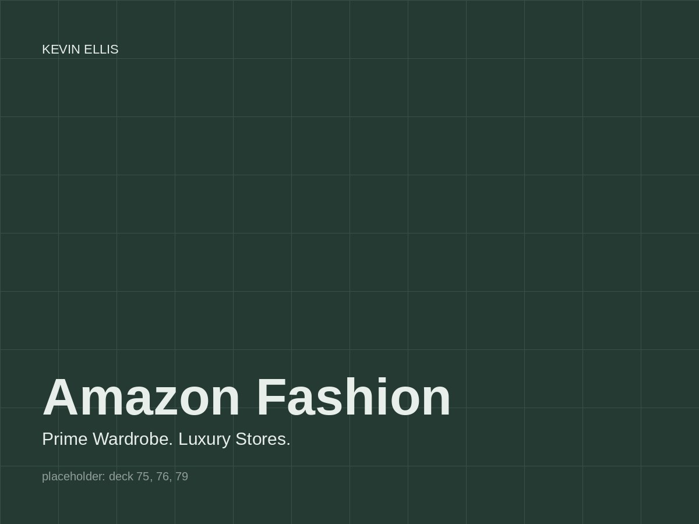

Head of Design and Research. Grew the org from 5 designers and 2 researchers to 20. In 2015 less than a tenth of the roughly $300 billion spent on clothing and shoes in the US was spent online, and Amazon was investing heavily to change that. Search and discovery were strong; evaluating a garment on a detail page was the weak point.
2015 to 2019

Placeholder. Final image to come.
Prime Wardrobe
Shop for clothing and shoes, fill a box, have it shipped free, try everything for seven days, send back what you don't want in the same self-sealing prepaid box, pay only for what you keep. It was complex even for Amazon, touching every part of the retail supply chain, digital and physical. I worked directly with the product owner and executive leadership to pitch and resource the design, and saw it through to launch. Prime Stylist followed, a curated-box model for customers who wanted guidance.
deck slides 75 to 76
The box. Plain brown is part of the brand outside; Prime blue inside, to make the unboxing count.
Luxury Stores
The last project I led there was the luxury brands exploration: a walled garden inside the Amazon app where only the most exclusive fashion brands could be bought, with minimal store presence and the content carrying the experience. No legacy to design around. It launched more than two years after we designed it, and looked remarkably like the original work.
deck slide 79
Luxury Stores, as designed and as launched.
The detail page, as a lesson
For four years, improving the product detail page for fashion customers was constant work, and every change had to win for all Amazon customers and pass web labs before it shipped. It was glacially incremental and it taught me how to move a shared platform: negotiate, test, and pick the changes that help everyone. I later aligned my team, marketing design, and the Shopbop design team on shared tenets so the fashion experience read as one thing across Amazon. Four designers and one researcher were promoted from L5 to L6 during my tenure.